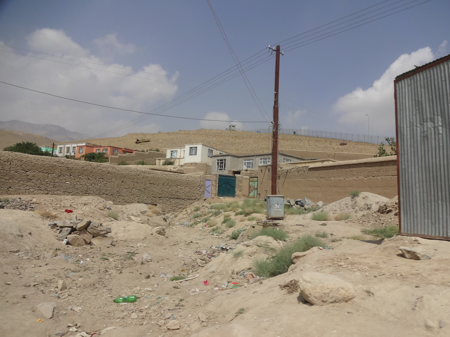

Ramadan & Eid al-Fitr
geschrieben am Monday, August 26, 2013
Wasser. Verdammt. So han ich mich grad gescht Abig und denn hüt Morge gfühlt. Das hed zwor meh miteme kaputte Wasserfilter i üsem Huus ztue als mitem Ramadan, aber so fühled sich viel Afghane während äm Ramadan. Ramadan heisst grundsätzlich öppe 28 Täg - halt sonen Mondzyklus - faschte. Die 28 Täg werded irgendwie vo Saudi Arabie oder so überwacht, wil Luut mine Kollege alles i ihrerer Religion sehr viel Sinn macht, au wenns nid im Koran stoht :-) In Saudi Arabie gsehg mer nämli dä Mond besser, haha! Jedefalls heisst faschte halt vom Morge am 3 bis am Obig am 7ni faschte. Also 16h nüt ässä und nüt trinke.
Für die wos nid mitbecho händ, ich bi wieder in Kabul und das sit fasch ämnä Monet. Ramadan isch au scho äs zitli verbi, aber wett glich no drüber schriebe (än Teil dävo stoht scho sit längerem, ha aber recht viel Volley gspielt am Obig mit Afghane und viel programmiert, drum kei Ziit ka).
Wil ich grad nüt gschieders ztue ka ha und ässä becho wenn alli andere nid ässäd eh chli ä müehsams unterfange isch, hani mich entschiede zum au no 3 Täg mitzfaschte. Ha das mol so meh oder weniger protokolliert.
Grundbedingige:
- 35° (+-3°) mit permanenter Sunne (Wolke gits ab und zue, aber ha chum hoffnige dasi i dä nöchste zwei Täg Wolke verwütsche.
- Hochi Luftfüechtigkeit
- Selbst i dä Nacht schwizt mer stark, ich schlofe grad mol no i Boxershorts ohni Decki, schätzigswiis 25°-30° i mim Zimmer. sSchwize i dä Nacht isch bsunders blöd wil mer äbä glich no paar Stunde Schlof durä bringe mue (am 3:15 AM zletzt mol trinke).
Ich han denn vorher no miteme Kolleg gred ober hungrig isch. Är hed denn nur gmeint äs sig easy für dicki Lüt wie ihn, aber für dünni wie mich sigs müehsam, wil ich kei Reserve hegi:
- tushna asti?
- No, it's not a problem for fat guys like me, it's hard for skinny boys like you, because I can use my reserves.
Do gseht mer au das äs in Afghanistan nüt negativs isch "dick" zsi, einigi vo mine Kollege währed sogar gern chli schwerer. Aber jetzt zum Protokoll.
- [1 Tag 02:20]
- Ufstoh! Di nöchste 40min heissts inä haue, soviel wie nur möglich. Ha grad zwei Brot inä gwürgt, obwohli 6h vorher sglich scho gmacht ha. Am 03:15 gangi wieder go schlafe, öppe 5 Minute spöter fangts Gehüle vo dä Mullahs a.
- [1 Tag ~03:30]
- Verdammt cha nid guet ischlofe, zviel gässä :-) Schlimmer isch eigentli dasi jetzt scho wieder äs glas wasser verträge wür.
- [1 Tag 07:00]
- Scho wieder ufstoh. So langsam hani so än liechte Durscht
- [1 Tag 13:00]
- Verdammt immer no 6h. Das würd än harte Tag. Ha mittlerwile doch so hart Durscht wie susch selte.
- [1 Tag 16:15]
- Meh Durst, puhhh... Bald stellt mis Notebook wieder mol ab wägämä achso übliche Stromusfall :-)
- [1 Tag 19:00]
- Endlich trinke! Ich ha notürli grad vollgas inä ghaue.
- [2 Tag 02:30]
- Wieder ufstoh. Aber chasch dänke, damol ghöri dä Wecker nid :-)
- [2 Tag 08:00]
- Naja wache doch mol no uf, also chli bschisse und glich no chli was näh.
- [2 Tag 12:00]
- Also das mol isch dä Durscht nid schlimm, aber ha au 5h weniger ufem Deckel.
A dem Ort hed denn mis "Protokoll" öppe gendet. Ich has denn schono durä zoge, aber sisch nüm so hart gsi, au am 3te Tag. Mä gwöhnt sich irgendwie ganz guet as nid trinke (ässä isch sowieso keis Problem). Solang mer nid än Büezer Job hed ischs eigentlich ganz guet möglich. Am 3 am morge ufstoh zum ässä wemer no kei Hunger hed isch eifach nur müehsam und gar nid gnussvoll, aber sus gohts würkli guet... Naja für mich.
Am schlimmste aber isch nämli di ganz religiös Tortur. Di bechömed i dä erste 14 Täg vom Ramadan dä ganz Koran vorgläsä (i dä zweite Hälfti gits irgendwelchi andere Predigte)! Isch jo doch än recht fette Schinke. Wil heisse: 1.5-2h am Tag id Moschee hocke und sich arabisch alose wo sie nid verstoht (dä Koran wird eigentlich überall nur arabisch vorgläsä wils sus nid sreine "Wort Gottes" isch.
Das muemer mol in Verhältnis setze: Ich halte kei Predigt us wo länger dured als 5 Minute und sie müend 2h stehend öppisem zuelose wos nid verstönd. Und das isch jo nid seinzige mol wos müend öppis mache. Ihri tägliche 5 Gebet sind au sus länger, zumindest eis isch immer öppe ä Halbstund gange. Würkli ganz müehsam, drum chamer mis Faschte au nid so ernscht näh, wil dä würkli müehsami Teil hani nid gmacht. 2h mich i dä Moschee langwile hätt mer glaub würkli eis gäh.
Eid al-Fitr
Eid al-Fitr isch dä gross Festtag i muslimische Länder. Au wenn das nid so würkli ä "Party" isch i üserne Auge, isch das für sie eifach ä mega Erlösig. Endlich wieder äs "normals" Läbä.
Ich bi 8 verschiedeni Hüser go bsueche, mä cha eifach zu allne mögliche Lüt verbi goh und unagmeldet inäluege, was sehr cool isch wilmer so au mol gseht wie alli Kollege läbäd. So fahrt mer denn mit mol zachte imnä Corolla (jo äs währed au no 3 meh gange :-)) zumnä Kolleg...
... womer denn am Hügel alti russischi Panzer gseht.
Me gseht mol wod Kollege so lebed...
...und lebed.
und au sus gseht mer immer wieder spezielli Sache.
Wie än Bsuech so cha usgseh chamer zum Bispiel do gseh (normalerwis kei Musig und meh Rede):
Ich bi denn no churz chli dur üsi "Quartierhauptstrass" gfahre um eu mol zzeige wie so ä afghanischi Stross usgseht. Äs isch grad no vorem Eid gsi, aber das tuet nid so viel zur Sach, isch au sus chli so:
Grüess us Kabul
~Dave